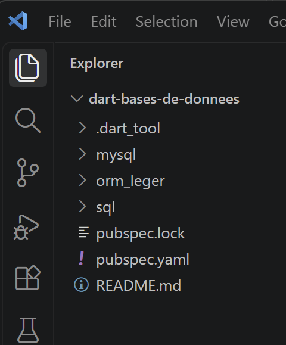

1. Introduction
Le PDF du document est |ICI|.
Les codes du document sont |ICI|.
Ce document est un produit de l’IA Claude d’Anthropic. Il a pour vocation de transposer le document : [Introduction au langage TypeScript et au framework NestJS] en remplaçant le langage TypeScript par le langage Dart.
L’IA Claude d’Anthropic a fait l’essentiel du travail (90%) :
- génération des codes : Claude a généré la totalité du code. Je n’ai fait que tester celui-ci en suivant le cours généré. Aucun SDK Dart n'était disponible dans l'environnement où Claude a travaillé (contrairement au cours TypeScript, où chaque script avait pu être exécuté et vérifié par Claude) : les scripts de ce cours ont été écrits et relus avec le même soin, vérifiés syntaxiquement (équilibre des accolades/parenthèses, présence d'un point d'entrée [main] dans chaque script exécutable), mais n'ont pas pu être compilés ni exécutés avant livraison. Note : les codes livrés ont tous été testés par le réviseur du cours. Des erreurs ont été remontées à l’IA Claude qui les a corrigées sur le champ.
- génération du cours au format ODT : Claude a généré plusieurs versions à ma demande. C’est là que je suis principalement intervenu.
Serge Tahé, septembre 2026
==
Ce document est un cours d'introduction au langage [Dart], conçu sur le même principe que le cours [Introduction au langage TypeScript et au framework NestJS] : apprendre un langage à travers une série de petits scripts autonomes, commentés ligne à ligne, plutôt qu'à travers un exposé théorique de sa grammaire.
La progression suit exactement celle du cours TypeScript : les mêmes notions, dans le même ordre, avec un script Dart en face de chaque script TypeScript. Cette symétrie est volontaire : elle permet, à tout moment, de comparer directement comment Dart et TypeScript répondent au même besoin - et de repérer, à chaque différence, ce qui relève d'un simple choix de syntaxe et ce qui relève d'une différence de fond entre les deux langages (typage structurel contre typage nominal, compilation contre transpilation, absence ou présence de coercition implicite, etc.).
Deux chapitres du cours TypeScript ne sont volontairement PAS repris ici : [Introduction au framework Web NestJS] et [Étude de cas : le serveur de calcul de l'impôt en NestJS]. Ces deux chapitres enseignent un framework web côté serveur écrit en TypeScript - une question sans rapport direct avec l'apprentissage du langage Dart lui-même. Le serveur NestJS de calcul de l'impôt, lui, est conservé : installé une bonne fois pour toutes (chapitre Installation d'un serveur NestJS), il sert de cible réelle pour tester les fonctions HTTP de Dart - exactement comme il sert de cible aux clients HTTP TypeScript du cours d'origine.
Une différence de périmètre, en revanche, distingue ce cours du cours TypeScript : la partie [Les fondamentaux] du cours TypeScript consacre trois sections entières aux nouveautés récentes d'ECMAScript (2020-2024, 2026) et à l'API [Temporal]. Ces nouveautés sont spécifiques à JavaScript/TypeScript et n'ont pas d'équivalent direct en Dart ; elles sont remplacées ici par une section [Nouveautés Dart 3.x], consacrée aux apports récents propres à Dart : les [records], le [pattern matching], les classes [sealed] et les modificateurs de classe.
1.1. Public visé et prérequis
Ce cours s'adresse à un lecteur qui connaît déjà la programmation - idéalement, qui a déjà suivi le cours TypeScript, puisque la comparaison constante entre les deux langages est au cœur de la pédagogie retenue ici. Aucune connaissance préalable de Dart n'est requise : chaque nouvelle notion est introduite par un script minimal, commenté en détail.
Contrairement à la idée reçue qui réduit Dart à «le langage de Flutter», ce cours ne parle à aucun moment de Flutter ni d'interfaces mobiles : Dart est ici utilisé comme un langage de programmation généraliste, exécuté en ligne de commande ([dart run]), exactement comme TypeScript l'était avec [tsx] dans le cours d'origine.
1.2. Organisation du projet d'exemples


Les scripts de ce cours sont livrés dans une arborescence séparée, [dart-fondamentaux/], qui reprend le découpage en dossiers du cours TypeScript ([bases/], [tableaux/], [objets/], [strings/], [regexp/], [fonctions/], [exceptions/], [modules/], [async/], [classes/], [http/]...), plus un nouveau dossier [dart3/] pour la section [Nouveautés Dart 3.x]. Une seconde arborescence, [dart-bases-de-donnees/], porte le chapitre Accès aux bases de données. Chaque dossier contient son propre [README.md] et, lorsque nécessaire, son propre [pubspec.yaml] (l'équivalent Dart du [package.json] de Node.js, cf. chapitre suivant).
Chaque script se lance individuellement avec la commande [dart run], suivie du chemin du script - par exemple [dart run dart-fondamentaux/bases/bases_01.dart]. Aucune installation complète du projet n'est nécessaire pour lancer un seul script : [dart pub get] (équivalent de [npm install]), lancé une fois à la racine d'un dossier muni d'un [pubspec.yaml], suffit à installer les dépendances de tous les scripts qu'il contient.